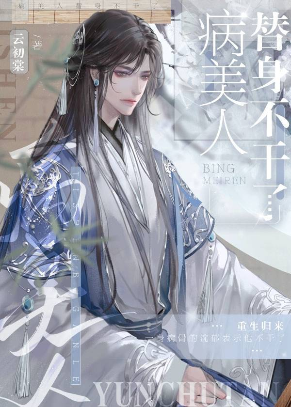

Shen Yu estaba sinceramente enamorado. Por el bien de esa persona, Shen Yu ignoró su cuerpo enfermo y conspiró para derrocar al tirano. Sólo después de la muerte de Shen Yu supo la verdad. Era un personaje de un libro y el hombre que amaba sólo lo veía como un sustituto del protagonista. Para allanar el camino hacia la felicidad de esa pareja, Shen Yu lo perdió todo.
Después de renacer, el enfermizo Shen Yu estaba harto de eso.
En cuanto a ese hombre, quien lo quisiera podría tenerlo.
Shen Yu tomó el lugar de su medio hermano y se convirtió en la concubina masculina del tirano. Al tirano no le gustaban los hombres de todos modos, y a Shen Yu no le quedaba mucho tiempo. Como iba a morir, bien podría ir al palacio a sentarse y esperar la muerte.
Después de entrar al harén del tirano que todos temían, Shen Yu comió y bebió sin ninguna preocupación en el mundo.
El tirano, de largo cabello negro sobre los hombros y ojos carmesí, no ocultó su hostilidad. Agarró a Shen Yu por el cuello. "¿No tienes miedo de morir?"
Shen "Termina con esto de una vez" Yu se sintió un poco emocionado. "¿Vas a matarme ahora?"
Tirano: “? ? ? ? ?”
Shen Yu entró al palacio esperando morir, pero esperó y esperó y esperó. Al final, los funcionarios solicitaron nombrarlo emperatriz y el tirano curó su enfermedad mortal.
Shen Yu: "..."
Shou: salta frenéticamente arriba y abajo en la línea inferior del gong pero nunca muere
Gong: todo lo que puede hacer con el shou es bajar sus resultados una y otra vez